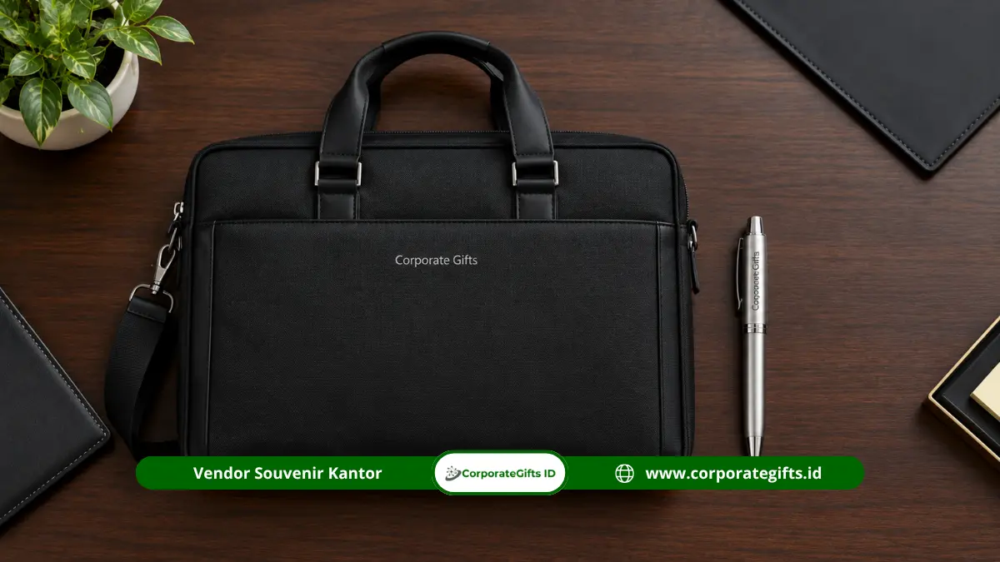

Corporate Gifts ID - Souvenir instansi pemerintah adalah cendera mata resmi berupa tumbler, notebook, pulpen, atau tas kerja yang mendukung rapat, seminar, dan acara kelembagaan instansi. Produk ini dipilih berdasarkan jenis kegiatan, jumlah penerima, anggaran, dan pedoman identitas visual lembaga. Corporate Gifts membantu instansi menyusun spesifikasi, desain logo, kemasan, dan jadwal produksi agar souvenir siap dibagikan tepat waktu.
Poin Kunci Souvenir Instansi Pemerintah:
- Relevansi Kegiatan: Souvenir instansi pemerintah paling efektif bila disesuaikan dengan jenis kegiatan, karakter penerima, dan citra lembaga.
- Pilihan Populer: Empat produk yang paling sering dipilih adalah tumbler, notebook, pulpen metal, dan tas kerja fungsional.
- Regulasi Perpres 46/2025: Perpres Nomor 46 Tahun 2025 menetapkan batas pengadaan langsung barang/jasa lainnya paling banyak Rp200 juta, sehingga perencanaan anggaran per kegiatan perlu dihitung sejak awal.
- Approval Sampel Fisik: Spesifikasi, desain logo, dan sampel produk fisik sebaiknya disetujui (sample proofing) sebelum produksi massal dimulai.
- Timeline Aman: Pemesanan lebih aman bila dijadwalkan jauh dari hari acara agar ada ruang untuk revisi dan pemeriksaan kualitas (QC).
Apa Itu Souvenir Instansi Pemerintah dan Mengapa Penting?
Souvenir instansi pemerintah adalah barang cendera mata bermuatan identitas lembaga yang dibagikan pada kegiatan kedinasan untuk mempererat hubungan dan memperkuat citra instansi. Barang ini bukan sekadar hadiah seremonial, melainkan media komunikasi resmi antarlembaga dan representasi etos kerja birokrasi yang melayani.
Kesan pertama sebuah kegiatan sering ditentukan oleh perlengkapan yang diterima peserta. Notebook rapi berlogo instansi atau tumbler stainless steel yang kokoh menyampaikan pesan tentang ketelitian dan profesionalisme lembaga, bahkan sebelum acara dimulai.
Dari sisi anggaran, konteks aturannya juga jelas. Menurut Peraturan Presiden Nomor 46 Tahun 2025 yang berlaku sejak 2025, pengadaan langsung barang/jasa lainnya bernilai paling banyak Rp200.000.000. Batas ini membuat panitia perlu menghitung total kebutuhan souvenir per kegiatan secara cermat sejak tahap perencanaan.
Apa Pengertian Souvenir Instansi Pemerintah?
Souvenir instansi pemerintah adalah produk fungsional atau representatif yang diberikan kepada peserta, tamu, mitra, atau pejabat dalam rangkaian kegiatan resmi lembaga. Wujudnya dapat berupa perlengkapan kerja, aksesori meja, atau cendera mata seremonial yang memuat logo dan identitas instansi.
Apa Fungsi Souvenir dalam Kegiatan Kedinasan?
Souvenir dalam kegiatan kedinasan berfungsi sebagai perlengkapan peserta, tanda apresiasi, sekaligus penguat citra kelembagaan. Produk yang dipakai sehari-hari, seperti pulpen dan tumbler, membuat logo instansi terlihat berulang di ruang kerja penerima.
Apa Perbedaan Souvenir Kantor Pemerintah dan Souvenir Acara Pemerintah?
Souvenir kantor pemerintah umumnya berupa perlengkapan kerja yang dibagikan rutin kepada pegawai atau tamu, sedangkan souvenir acara pemerintah disiapkan khusus untuk momen tertentu seperti seminar, peringatan, atau kunjungan kerja. Keduanya sama-sama membawa identitas lembaga, tetapi souvenir acara biasanya memakai desain dan kemasan yang lebih representatif.
Produk Apa Saja yang Cocok Menjadi Souvenir Instansi Pemerintah?
Produk yang cocok untuk souvenir instansi pemerintah adalah barang yang fungsional, tahan lama, mudah diberi logo, dan sopan untuk konteks resmi, seperti tumbler, notebook, pulpen metal, dan tas kerja.

Tas kerja dan pulpen metal sebagai souvenir kegiatan kedinasan yang tahan lama dan berkelas.
Tumbler Custom untuk Kegiatan Kedinasan
Tumbler custom adalah botol minum berlogo yang umumnya berbahan stainless steel dinding ganda dengan kapasitas sekitar 350 hingga 600 ml. Dinding ganda membantu menjaga suhu minuman lebih lama, sehingga tumbler nyaman dipakai peserta rapat dan seminar. Logo instansi dapat diaplikasikan dengan laser engraving atau cetak UV agar tidak mudah pudar. Bagi panitia, tumbler juga mendukung kampanye pengurangan botol plastik sekali pakai di lingkungan kantor.
Notebook dan Pulpen Metal untuk Kebutuhan Kerja
Notebook custom adalah buku catatan bersampul yang dapat dicetak logo dan nama kegiatan, sedangkan pulpen metal adalah alat tulis berbadan logam yang terasa kokoh dan formal. Keduanya menjadi pasangan klasik untuk rapat koordinasi, bimbingan teknis, dan rapat pimpinan. Notebook biasanya tersedia dengan sampul hard cover atau soft cover, sedangkan pulpen metal dapat digrafir logo dan nama lembaga. Kombinasi ini relatif mudah diproduksi dalam jumlah besar dan cocok untuk anggaran yang terukur.
Tas Kerja untuk Peserta Kegiatan
Tas kerja untuk souvenir adalah tas berlogo yang dirancang untuk membawa dokumen, laptop tipis, atau perlengkapan peserta selama kegiatan. Bahan yang umum dipakai meliputi polyester, kanvas, dan bahan sintetis bertekstur. Pilihan bahan menentukan kesan produk sekaligus harganya. Tas kerja cocok untuk seminar, bimbingan teknis, dan kegiatan sehari penuh yang membutuhkan tempat penyimpanan materi.
Paket Perlengkapan Kantor untuk Penerima Undangan
Paket perlengkapan kantor adalah kombinasi beberapa produk, misalnya notebook, pulpen metal, dan tumbler, yang dikemas dalam satu kotak untuk tamu undangan. Penataan dalam hardbox eksklusif memberikan sentuhan prestisius bagi pejabat tamu kehormatan.
Jenis Souvenir Instansi Pemerintah Berdasarkan Kegiatan
Jenis souvenir instansi pemerintah sebaiknya ditentukan oleh format kegiatan: perlengkapan kerja untuk rapat, perlengkapan peserta untuk seminar, cendera mata representatif untuk kunjungan, dan produk beridentitas lembaga untuk acara seremonial:
Souvenir untuk Rapat dan Koordinasi
Rapat koordinasi membutuhkan produk ringkas yang langsung terpakai, seperti notebook dan pulpen metal. Peserta dapat mencatat hasil rapat pada hari itu juga, dan logo instansi ikut terbawa ke meja kerja masing-masing.
Souvenir untuk Seminar dan Bimbingan Teknis
Seminar dan bimbingan teknis melibatkan banyak peserta dengan materi yang cukup padat. Tas kerja, tumbler, dan alat tulis menjadi pilihan yang relevan, dan susunannya dapat dikembangkan menjadi souvenir seminar kit instansi yang lebih terstruktur.
Souvenir untuk Kunjungan Kerja dan Hubungan Kelembagaan
Kunjungan kerja menuntut cendera mata yang representatif karena penerimanya adalah pejabat atau mitra lembaga. Gift set berisi produk pilihan dalam kemasan formal umumnya lebih tepat dibanding produk satuan tanpa kemasan.
Souvenir untuk Acara Peringatan dan Seremoni Resmi
Acara peringatan dan seremoni resmi membutuhkan produk beridentitas kuat, misalnya souvenir dengan logo, tahun peringatan, dan tema acara. Kesesuaian dengan pedoman visual instansi menjadi perhatian utama pada jenis kegiatan ini.
| Jenis Kegiatan Kedinasan | Kebutuhan Produk | Contoh Rekomendasi |
|---|---|---|
| Rapat Koordinasi | Perlengkapan kerja harian ringkas | Notebook agenda dan pulpen metal grafir |
| Seminar & Bimtek | Perlengkapan peserta lengkap | Tas kerja seminar, tumbler SUS304, dan alat tulis |
| Kunjungan Kerja | Cendera mata representatif formal | Gift set eksekutif dalam hardbox berlogo emas |
| Acara Resmi & Seremoni | Produk beridentitas lembaga kuat | Souvenir custom logo tematik peringatan instansi |
Bagaimana Menentukan Souvenir Sesuai Anggaran dan Jumlah Penerima?
Menentukan souvenir sesuai anggaran dimulai dari pagu kegiatan dan jumlah penerima, lalu membagi biaya menjadi produk, branding, kemasan, dan distribusi agar spesifikasi tidak melampaui batas:
Menentukan Pagu Anggaran dan Jumlah Penerima
Langkah pertama adalah menetapkan pagu souvenir dalam kegiatan dan menghitung penerima secara pasti, termasuk peserta, panitia, narasumber, dan tamu undangan. Bagi instansi, ketentuan Perpres Nomor 46 Tahun 2025 mewajibkan kementerian, lembaga, dan pemerintah daerah mengalokasikan paling sedikit 40 persen anggaran belanja barang/jasa untuk produk usaha mikro, usaha kecil, dan koperasi dari hasil produksi dalam negeri. Panitia perlu memastikan rencana belanja souvenir sejalan dengan kebijakan belanja instansinya.
Menyesuaikan Spesifikasi Produk dengan Anggaran
Spesifikasi produk perlu diseimbangkan dengan anggaran. Notebook hard cover dengan kertas berkualitas lebih tinggi akan berbeda biayanya dari notebook soft cover sederhana. Panitia dapat mempertahankan kesan formal dengan memilih satu atau dua elemen premium, misalnya pulpen metal, sambil menyederhanakan elemen pendukung lainnya.
Menghitung Kebutuhan Branding dan Kemasan
Branding dan kemasan adalah komponen biaya tersendiri. Metode cetak seperti laser engraving atau cetak UV, jumlah warna logo, dan jenis kotak mempengaruhi total biaya akhir.
Mempertimbangkan Biaya Produksi dan Distribusi
Biaya produksi dan distribusi mencakup waktu pengerjaan, pemeriksaan kualitas, pengemasan, serta pengiriman ke lokasi kegiatan. Pengiriman ke luar kota atau ke beberapa titik satuan kerja akan menambah komponen biaya dan waktu yang perlu dimasukkan dalam jadwal kerja panitia.
Spesifikasi Apa yang Harus Ditetapkan Sebelum Produksi?
Spesifikasi souvenir instansi yang wajib ditetapkan sebelum produksi meliputi jenis produk, bahan, ukuran, warna, metode branding, kemasan, jumlah pesanan, dan batas waktu pengiriman:
Bahan, Ukuran, Warna, dan Fungsi Produk
Tentukan bahan utama, dimensi, kapasitas, dan warna yang selaras dengan identitas instansi. Contohnya, tumbler dengan kapasitas tertentu dan warna sesuai palet lembaga, atau tas kerja dengan bahan yang tahan pemakaian harian.
Metode Cetak atau Branding Logo
Metode branding harus cocok dengan material. Logam umumnya cocok untuk grafir laser, sedangkan kain lebih sesuai untuk sablon, bordir, atau cetak digital.
Jenis Kemasan dan Kelengkapan Produk
Kemasan menentukan kesan penerimaan. Kotak rigid dengan logo terkesan formal, sedangkan kemasan sederhana lebih efisien untuk pembagian massal.
Sampel Produk dan Pemeriksaan Kualitas
Sampel fisik atau mockup membantu panitia melihat posisi logo, warna, dan kualitas bahan sebelum produksi massal dimulai. Pemeriksaan kualitas setelah produksi memastikan jumlah dan kondisi produk sesuai pesanan.
| Komponen Spesifikasi | Informasi yang Wajib Ditentukan |
|---|---|
| Produk | Jenis barang, tipe model, dan kegunaan utama |
| Material | Bahan baku utama, ketebalan, dan pilihan warna dasar |
| Ukuran | Dimensi fisik, kapasitas isi (ml/liter), dan berat barang |
| Branding | Posisi logo, ukuran cetak, dan teknik branding (grafir/UV/sablon) |
| Kemasan | Jenis box (hardbox/softbox/tote bag), finishing, dan kartu ucapan |
| Kuantitas | Jumlah pesanan pasti beserta buffer cadangan 5-10% |
| Waktu | Batas waktu produksi, jadwal QC, dan tanggal tiba di lokasi |
Bagaimana Proses Pengadaan Souvenir Instansi Pemerintah?
Proses pengadaan souvenir instansi umumnya berjalan dari penyusunan kebutuhan, permintaan penawaran, pemeriksaan sampel, penetapan jadwal, hingga pemeriksaan hasil produksi dan kelengkapan dokumen administrasi.
Mekanisme yang berlaku mengikuti ketentuan masing-masing instansi dan jenis belanja terkait, sehingga panitia perlu memastikan prosedur internal sebelum memulai. Sebagai gambaran, ketentuan terbaru menyebutkan bahwa pengadaan langsung dengan nilai di atas Rp50 juta menggunakan sistem pengadaan secara elektronik dengan fitur transaksional (Perpres Nomor 46 Tahun 2025).
- Menyusun Kebutuhan dan Spesifikasi: Panitia menyusun daftar produk, jumlah, dan spesifikasi teknis secara tertulis agar penawaran yang diterima mudah diperiksa.
- Meminta Penawaran Harga dan Rincian Produk: Penawaran yang baik memuat rincian produk, branding, kemasan, pengiriman, dan masa berlaku harga. Rincian yang jelas mempermudah proses persetujuan internal.
- Memeriksa Sampel dan Desain: Sampel dan mockup desain diperiksa untuk memastikan logo, warna, dan bahan sesuai kebutuhan sebelum produksi berjalan.
- Menentukan Jadwal Produksi dan Pengiriman: Jadwal produksi perlu memberi ruang untuk revisi desain, pemeriksaan kualitas, dan pengiriman agar souvenir tiba sebelum hari kegiatan.
- Memeriksa Hasil Produksi dan Kelengkapan Dokumen: Saat barang diterima, periksa jumlah, kualitas, dan kelengkapan dokumen pendukung (faktur pajak, kuitansi, berita acara serah terima) sesuai ketentuan instansi.
Bagaimana Memilih Vendor Souvenir Instansi Pemerintah yang Tepat?
Vendor souvenir instansi yang tepat mampu memproduksi dalam jumlah besar, menjaga konsistensi branding, memberi rincian harga tertulis, dan memenuhi jadwal produksi serta pengiriman:
- Memeriksa Kemampuan Produksi dalam Jumlah Besar: Tanyakan kapasitas produksi harian dan ketersediaan bahan baku untuk jumlah yang dibutuhkan, terutama pada musim kegiatan padat seperti akhir tahun anggaran.
- Memastikan Konsistensi Hasil Branding: Minta contoh hasil cetak atau grafir agar terlihat kerapian, ketajaman logo, dan konsistensi antarunit barang.
- Meminta Rincian Harga dan Spesifikasi Tertulis: Penawaran tertulis yang memuat spesifikasi, kuantitas, dan komponen biaya membantu panitia menghindari kesalahpahaman di kemudian hari.
- Memastikan Jadwal Produksi dan Pengiriman: Jadwal yang disepakati harus mencakup tahap desain, produksi, pemeriksaan, dan pengiriman, lengkap dengan lokasi tujuan.
- Memeriksa Sampel dan Rekam Jejak Pekerjaan: Sampel produk serta pengalaman menangani kegiatan korporat atau kelembagaan menjadi bahan pertimbangan yang wajar. Corporate Gifts terbiasa mendampingi kebutuhan souvenir bagi audiens korporat dan instansi dengan proses yang transparan.
Souvenir Seperti Apa yang Dibutuhkan Setiap Jenis Instansi?
Kebutuhan souvenir berbeda pada tiap jenis instansi pemerintah, tergantung pada fungsi pelayanan publik dan audiens penerimanya:
1. Dinas dan Badan Pemerintahan
Dinas dan badan pemerintahan umumnya memerlukan notebook, pulpen, dan tumbler untuk rapat serta sosialisasi program kepada masyarakat atau mitra binaan.
2. Kantor Pemerintah Daerah
Kantor pemerintah daerah dapat memadukan produk fungsional dengan elemen identitas daerah, seperti motif batik lokal atau warna khas daerah, pada desain kemasan atau produk cinderamata.
3. Lembaga Pendidikan Negeri
Lembaga pendidikan negeri cocok dengan tas, alat tulis, dan tumbler yang memuat logo institusi untuk wisuda, seminar nasional, atau kegiatan akademik kampus.
4. Kementerian dan Lembaga Negara
Kementerian dan lembaga negara biasanya membutuhkan gift set berkemasan formal untuk delegasi, mitra kerja sama luar negeri, dan tamu kunjungan kehormatan tingkat tinggi.
Pertanyaan Seputar Souvenir Instansi Pemerintah (FAQ)
Kesimpulan: Wujudkan Pengadaan Souvenir Kedinasan yang Akuntabel
Souvenir instansi pemerintah bekerja paling baik bila produk, anggaran, spesifikasi, dan jadwal direncanakan bersamaan. Mulailah dari jenis kegiatan dan jumlah penerima, lalu pilih produk seperti tumbler, notebook, pulpen metal, atau tas kerja yang fungsional dan mudah diberi logo.
Siap menyiapkan souvenir untuk kegiatan instansi Anda? Konsultasikan jenis produk, jumlah pesanan, spesifikasi, dan jadwal acara bersama Corporate Gifts, lalu dapatkan penawaran tertulis yang sesuai kebutuhan kegiatan resmi Anda.